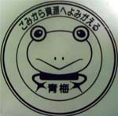
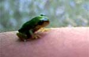
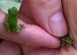
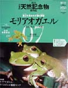
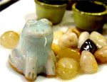
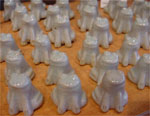
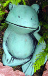
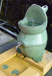
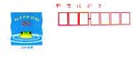
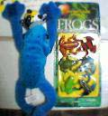

ゴミ袋にカエル印！カエラー行くところカエルが！ 【江戸発まさえ同志記者】この度、勤務地が変わってブーブーいいながら出社していたのですが、なにげなく出勤していて目にとまったものがありました。なんとその市の指定ごみ袋が「カエル」なのです！不思議なめぐり合わせ！ カエルが「ごみから資源によみがえる」なんて標語を掲げています。 この市にカエラーがいたら、このゴミ袋を捨てたくないばかりに、きっとゴミを出さなくなるに違いありません！ お役所もなかなかやるもんです！！！ 【全国かえる奉賛会】人生流転する先にカエルあり！うれしいよねーっ。青梅市は大王が通学していた都立秋川高校のそばの大都市なのであるううううううっ！
豆カエル手乗りカエルは超かわいい！  【福岡発ひさよ同志記者】この間、篠栗町内の萩尾神社裏の川で、ものすごくかわいいかえるさん(ほんもの)と、出会ったのです!!!たくさん、いた。小さくて、なぜか子供達の手にのったまま。あんまりかわいかったもので、デジカメにおさめて来ました。同志記者、篠栗特派員の使命を感じ、ここに送ります。
【全国かえる奉賛会】ぐおおおおおおおおお。かわいいいいいいいいい。こんな豆カエルがいるなんてなーっ。まるで作りもんだよ。
空前のベストセラー「モリアオガエル」読本！ 【江戸発まさえ同志記者】あと、私が前に投稿した、「日本の天然記念物」の「モリアオガエル」発売中〜。なかなか見ごたえのある写真と解説でした。書店で見かけたらご覧くださいませ。【福岡発ひさよ同志記者】 かえるさんの本、ゲットしてしまいました。週刊、日本の天然記念物、モリアオガエルです。立体模型つき! 【日本発ようくん同志記者】 小学館の週刊「日本の天然記念物」という本をご存知でしょうか。その7号がモリアオガエルなのです。おまけにフィギュアがついてくるのです。ほぼ実物大です。かわいいです。手に乗せて和んでます。パソコンの上にちょこんと乗せてもGOOD！本誌の写真もきれいです。是非手元に一冊いかがでしょう。ちなみに静岡市にも産卵地があります。
カエルしか目にはいらなああああい！ 【福岡、熊本発すみちゃん同志記者】カエルっていったん目についたら、あちこちで発見します。 有名な「高森トンネル」の入り口にあったカエルくんの水飲み場もみつけたし。
 『あああー！エコラの入り口に飾ってあったカエル』『おおおっ！会社のADSLユーザーの庭に飾ってあったカエル』『ひょえええええ！キャナルのチャイプールに置いてあったカエル』『ひええええ。阿蘇にもあったカエル水飲み場！』もー、写真をとりまくりで、カエル以外の風景とか、ちっとも覚えてないよ（＿＿）汗；
  【全国かえる奉賛会】カエラーと旅行をしたらとっても大変なのである。カエルな彼女もったりしたら、もうたいへんだあああああ。『ああああああああっーカエルよおおおおおおお（＾＾）/~』『あーこっちにも！（＾＾）／』『うわーいこっちにもあるよおおお。いるいるいるうううう（＾o＾）』『わーカエルグッズだああああ（＾_＾）』てなもんですので、新婚旅行とか、カエルがいると寄り道しまくりのカエル買いまくりで、旦那どろこではない。
記念写真も彼氏なんかどこにも映ってない！カエルばっかしだ。すみちゃん同志記者も、立派なカエラーになったものよのう。
残暑見舞いから年賀状までカエルかもメールで出そう！ 【広島発けろけろ同志記者】暑中見舞いと言えば「かもめ〜る」ですよねー。今年の「かもめ〜る(料額印面)」になななんと「カエル」が描かれているではありませんかぁ。。とうとう総務省までカエル化してしまったぁ。「カエル」「夏の道」「きんぎょ」の３種類あって「カエル」が１３３,１６４千枚発行されているそうです。みんなも「カエルかもめ〜る」を送ってカエラーを増やそう。。詳しくはここへ！ 【全国かえる奉賛会】今年の年賀状は買わないで、いまのうちに、かもめーるをごっそりと買い込もう！来年もカエル年だああああ。だから、毎年毎年、かもめーるで年賀状を出そうではないかああああああ。会社の採用通知とか、学校の合格通知も全部かもめーるにしよう！
もちろんカエルがついているんで、全部を当選にしてほしいぞ。総務省の建物正面に、まもめーるデザインのかえるを張り付けていれば、行政改革も避けてとおってくれるんで、役人のみんなも、かもめーる爆発推進運動に参加しようではないかああああああああ。
鳥羽水族館でカエルセットをゲット！ 【三重発ようくん同志記者】鳥羽水族館に行ってきましたぁ。あそこにはかえるが居るのですー。しかも何種類も。こどもはだんなに押し付けて写真撮りまくりました。しかし！人がうっとりとしてる横で「やーんきもい〜」。だったら、くんなって感じですよね。帰りに土産物コーナーでかえるグッズ買いまくり、少し気がはれました。
サーバダウンでカエル中！【福岡かえる展実行委員会】福岡かえる展の公式ページとか、かえる掲示板とか設置している、http://www.kerokero.com/が落ちています。ついでにページの改造もしているんで、しばしお待ちを！福岡かえる展を全国展開へ！各地の有志を募集するうううう【福岡かえる展実行委員会】かえる展を全国各地の年中行事として定着し、国民の祝日に格上げするために、来年から全国各地の有志がいる場所で、６月に限らず、年中無休でリレー開催するとか、考えているのである。『おらが町でもカエル展したいよおおおおおお』っていう人がいたら、開催を支援するので、まずは仲間を集めていてくれえええ。最低１人からでも、根性があればできるであろうぞ。詳細はおって説明するなりいいい。
投稿採用者に武功カエル徽章を授与！ |

かえる古新聞過去に取り上げた記事を見出し付きで一覧したい人は、ここをクリック◆創刊号を見る◆先週号を見る◆話題の号を見る◆かえる新聞の昔を読む
|
私も入っています。。全国かえる奉賛会
大王様に会うには、このバナーをクリック。ずっと奥に写真館があるぞ。全国かえる奉賛会に入会するには、自分のホームページのどこかに、下の部分を追加するとバナーがリンク付きで表示されるぞ。どんどん入会しましょー |


|